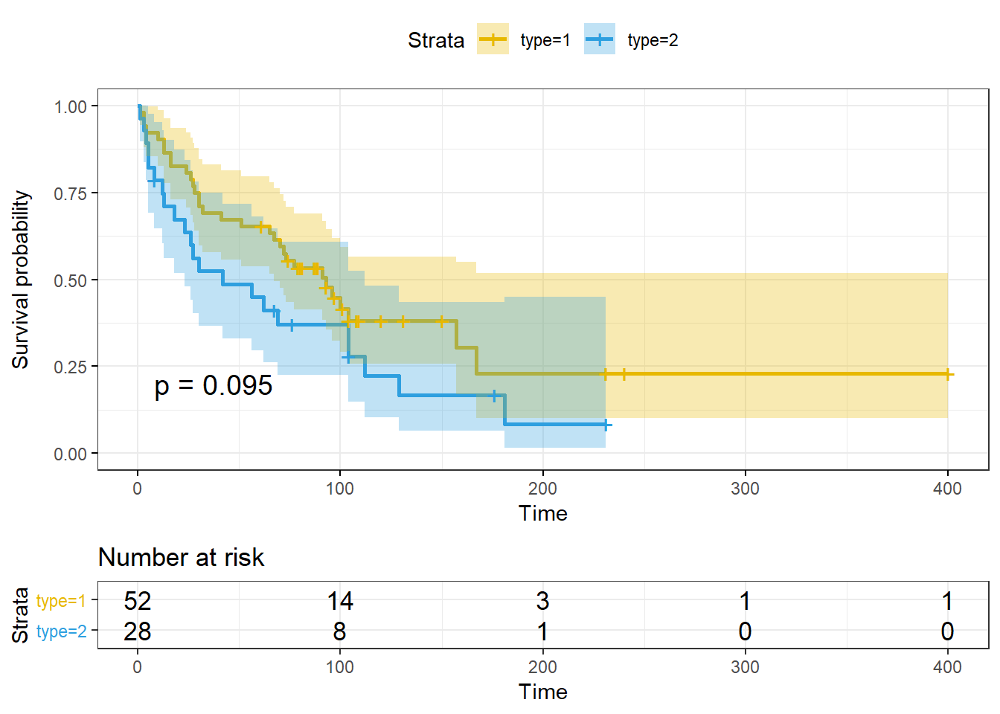

§ Chapter 8 Survival Analysis
8.1 Kaplan-Meier estimate
Data：Every data set used is found in the package KMsurv, which are the data sets from Klein and Moeschberger’s book.
install.packages(‘survival’)
install.packages(‘KMsurv’)
install.packages(‘DT’) install.packages(‘survminer’)
This tongue data frame has 80 rows and 3 columns:
type: Tumor DNA profile (1=Aneuploid Tumor, 2=Diploid Tumor)
time: Time to death or on-study time, weeks
delta: Death indicator (0=alive, 1=dead)
data(tongue)
DT::datatable(tongue,
extensions = c('FixedColumns',"FixedHeader"),
options = list(scrollX = TRUE, paging=TRUE, fixedHeader=TRUE))attach(tongue)
my.surv <- Surv(time[type==1], delta[type==1])
my.surv## [1] 1 3 3 4 10 13 13 16 16 24 26 27 28 30
## [15] 30 32 41 51 65 67 70 72 73 77 91 93 96 100
## [29] 104 157 167 61+ 74+ 79+ 80+ 81+ 87+ 87+ 88+ 89+ 93+ 97+
## [43] 101+ 104+ 108+ 109+ 120+ 131+ 150+ 231+ 240+ 400+my.fit <- survfit(my.surv ~ 1 )
summary(my.fit)## Call: survfit(formula = my.surv ~ 1)
##
## time n.risk n.event survival std.err lower 95% CI upper 95% CI
## 1 52 1 0.981 0.0190 0.944 1.000
## 3 51 2 0.942 0.0323 0.881 1.000
## 4 49 1 0.923 0.0370 0.853 0.998
## 10 48 1 0.904 0.0409 0.827 0.988
## 13 47 2 0.865 0.0473 0.777 0.963
## 16 45 2 0.827 0.0525 0.730 0.936
## 24 43 1 0.808 0.0547 0.707 0.922
## 26 42 1 0.788 0.0566 0.685 0.908
## 27 41 1 0.769 0.0584 0.663 0.893
## 28 40 1 0.750 0.0600 0.641 0.877
## 30 39 2 0.712 0.0628 0.598 0.846
## 32 37 1 0.692 0.0640 0.578 0.830
## 41 36 1 0.673 0.0651 0.557 0.813
## 51 35 1 0.654 0.0660 0.537 0.797
## 65 33 1 0.634 0.0669 0.516 0.780
## 67 32 1 0.614 0.0677 0.495 0.762
## 70 31 1 0.594 0.0683 0.475 0.745
## 72 30 1 0.575 0.0689 0.454 0.727
## 73 29 1 0.555 0.0693 0.434 0.709
## 77 27 1 0.534 0.0697 0.414 0.690
## 91 19 1 0.506 0.0715 0.384 0.667
## 93 18 1 0.478 0.0728 0.355 0.644
## 96 16 1 0.448 0.0741 0.324 0.620
## 100 14 1 0.416 0.0754 0.292 0.594
## 104 12 1 0.381 0.0767 0.257 0.566
## 157 5 1 0.305 0.0918 0.169 0.550
## 167 4 1 0.229 0.0954 0.101 0.518plot(my.fit, main="Kaplan-Meier estimate with 95% confidence bounds", xlab="time", ylab="survival function")# hazard function
H.hat<--log(my.fit$surv)
print(my.fit, print.rmean=TRUE) ## Call: survfit(formula = my.surv ~ 1)
##
## n events *rmean *se(rmean) median 0.95LCL
## 52.0 31.0 146.6 27.7 93.0 67.0
## 0.95UCL
## NA
## * restricted mean with upper limit = 400#compare type=1 and type=2
my.fit1<-survfit(Surv(time,delta)~type, data=tongue)
print(my.fit1)## Call: survfit(formula = Surv(time, delta) ~ type, data = tongue)
##
## n events median 0.95LCL 0.95UCL
## type=1 52 31 93 67 NA
## type=2 28 22 42 23 112ggsurvplot(my.fit1, pval = TRUE, conf.int = TRUE, risk.table = TRUE,
ggtheme = theme_bw(), palette = c("#E7B800", "#2E9FDF"))
#Tests for two or more samples
survdiff(Surv(time, delta) ~ type) # output omitted## Call:
## survdiff(formula = Surv(time, delta) ~ type)
##
## N Observed Expected (O-E)^2/E (O-E)^2/V
## type=1 52 31 36.6 0.843 2.79
## type=2 28 22 16.4 1.873 2.79
##
## Chisq= 2.8 on 1 degrees of freedom, p= 0.09detach(tongue)8.2 Cox PH models
Mayo Clinic Primary Biliary Cirrhosis Data
Followup of 312 randomised patients with primary biliary cirrhosis, a rare autoimmune liver disease, at Mayo Clinic.install.packages(‘JM’)
fit <- coxph(Surv(years, status2) ~ drug + sex + age, data = pbc2.id)
summary(fit)## Call:
## coxph(formula = Surv(years, status2) ~ drug + sex + age, data = pbc2.id)
##
## n= 312, number of events= 140
##
## coef exp(coef) se(coef) z Pr(>|z|)
## drugD-penicil -0.146013 0.864146 0.172143 -0.848 0.3963
## sexfemale -0.470905 0.624437 0.221785 -2.123 0.0337 *
## age 0.042842 1.043773 0.008505 5.037 4.72e-07 ***
## ---
## Signif. codes: 0 '***' 0.001 '**' 0.01 '*' 0.05 '.' 0.1 ' ' 1
##
## exp(coef) exp(-coef) lower .95 upper .95
## drugD-penicil 0.8641 1.1572 0.6167 1.2109
## sexfemale 0.6244 1.6014 0.4043 0.9644
## age 1.0438 0.9581 1.0265 1.0613
##
## Concordance= 0.629 (se = 0.024 )
## Rsquare= 0.101 (max possible= 0.991 )
## Likelihood ratio test= 33.25 on 3 df, p=3e-07
## Wald test = 34.87 on 3 df, p=1e-07
## Score (logrank) test = 35.31 on 3 df, p=1e-07Survival in patients with advanced lung cancer from the North Central Cancer Treatment Group. Performance scores rate how well the patient can perform usual daily activities.
DT::datatable(lung,
extensions = c('FixedColumns',"FixedHeader"), rownames = FALSE,
options = list(scrollX = TRUE, paging=TRUE, fixedHeader=TRUE))survdiff(Surv(time,status==1)~sex, data=lung)## Call:
## survdiff(formula = Surv(time, status == 1) ~ sex, data = lung)
##
## N Observed Expected (O-E)^2/E (O-E)^2/V
## sex=1 138 26 35.6 2.60 6.23
## sex=2 90 37 27.4 3.39 6.23
##
## Chisq= 6.2 on 1 degrees of freedom, p= 0.01# predict male survival from age and medical scores
MaleMod <- coxph(Surv(time,status)~age+ph.ecog+ph.karno+pat.karno,
data=lung, subset=sex==1)
# display results
summary(MaleMod)## Call:
## coxph(formula = Surv(time, status) ~ age + ph.ecog + ph.karno +
## pat.karno, data = lung, subset = sex == 1)
##
## n= 134, number of events= 108
## (4 observations deleted due to missingness)
##
## coef exp(coef) se(coef) z Pr(>|z|)
## age 0.022465 1.022719 0.012216 1.839 0.0659 .
## ph.ecog 0.665452 1.945370 0.225712 2.948 0.0032 **
## ph.karno 0.025553 1.025883 0.011778 2.170 0.0300 *
## pat.karno -0.011059 0.989002 0.008892 -1.244 0.2136
## ---
## Signif. codes: 0 '***' 0.001 '**' 0.01 '*' 0.05 '.' 0.1 ' ' 1
##
## exp(coef) exp(-coef) lower .95 upper .95
## age 1.023 0.9778 0.9985 1.048
## ph.ecog 1.945 0.5140 1.2499 3.028
## ph.karno 1.026 0.9748 1.0025 1.050
## pat.karno 0.989 1.0111 0.9719 1.006
##
## Concordance= 0.617 (se = 0.031 )
## Rsquare= 0.125 (max possible= 0.998 )
## Likelihood ratio test= 17.87 on 4 df, p=0.001
## Wald test = 18.3 on 4 df, p=0.001
## Score (logrank) test = 18.6 on 4 df, p=9e-04plot(survfit(MaleMod))- Holding the other covariates constant, an additional year of age reduces the weekly hazard of rearrest by a factor of \(e^{0.0225} = 1.022719\) on average.
- Each ph.ecog increases the hazard by a factor of 1.945370 on average.
- The likelihood ratio test is a equivalent tests of the omnibus null hypothesis that all of the \(\beta's\) are zero. In this instance, the hypothesis is soundly rejected.
- So we can obtain Cox proportional hazards model as follows:
\(h(t,x)=h_0(t)+exp(0.0225age+0.6655ph.ecog+0.0256ph.karno-0.011pat.karno)\)